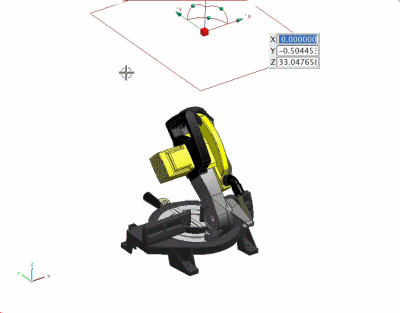
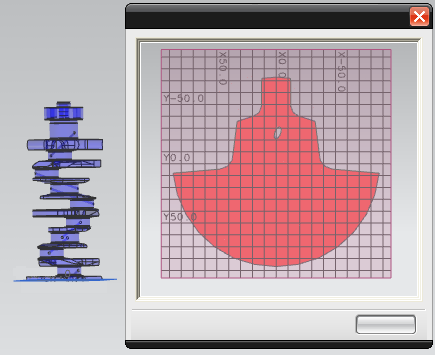

New Section
Use the New Section command to create as many cross-section views as you require.
Use view sections to examine or document the inside of a complicated part or view how assembly parts interact with one another.

You can:
-
Perform most solid sectioning functions, such as linear and angular positioning, directly in the graphics window, using handles and on-screen input boxes, without the use of multiple dialog boxes.
-
Section the model or assembly using one, two, or six planes.
-
Manipulate sections easily by dragging, moving, and rotating the sectioning handles.

Note
You cannot move the viewing section plane by dragging the origin of the manipulator.
-
Extract a copy of section curves for use in documentation.
-
Add a grid to assist you with judging section dimensions.
-
Display the work section in a 2D viewing window.

-
Use the Assembly Navigator to preview one or more sections by displaying their curves.
You have the flexibility to change cap and interference colors. The Show Interference color option displays any interference with intersecting objects. The Cap Color option can be used with a single plane, as well as multiple planes.
Cross-section views that are created using the New Section command, are listed in the Sections folder in the main panel of the Assembly Navigator.
|
Sections |
The work section is the one that you can clip and unclip.
Where do I find it?
|
Application |
Gateway, Modeling, Manufacturing |
|
Toolbar |
View→New Section |
|
Menu |
View→Section→New Section |
|
Assembly Navigator |
Right-click Sections→New Section |